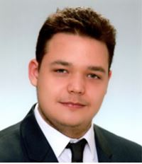

Tudnivalók rólam
Az én nevem Szorcsik István, 20 éves egyetemi hallgató vagyok.
Zalaegerszegen láttam meg a napvilágot 2000. augusztusában, és itt is nevelkedtem fel. Már gyerekkoromban is különösen rajongtam az autókért, rengeteg ilyen típusú játékkal is rendelkeztem akkoriban, és ez a szenvedély mai napig megvan a járművek iránt, ebből kifolyólag, pedig szinte mindenféle autósport eseményt figyelemmel kísérek. A három legkedvencebb versenyzőm alább látható és olvasható.
- Valentino Rossi (MotoGP)
- Fernando Alonso (Forma-1)
- Gary Paffett (DTM)
Az autósportokon kívül sok más sporteseményt is nyomon követek, amelyek közül néhányat szeretnék is felsorolni:
- Tenisz
- Vízilabda
- Síugrás
- Labdarúgás